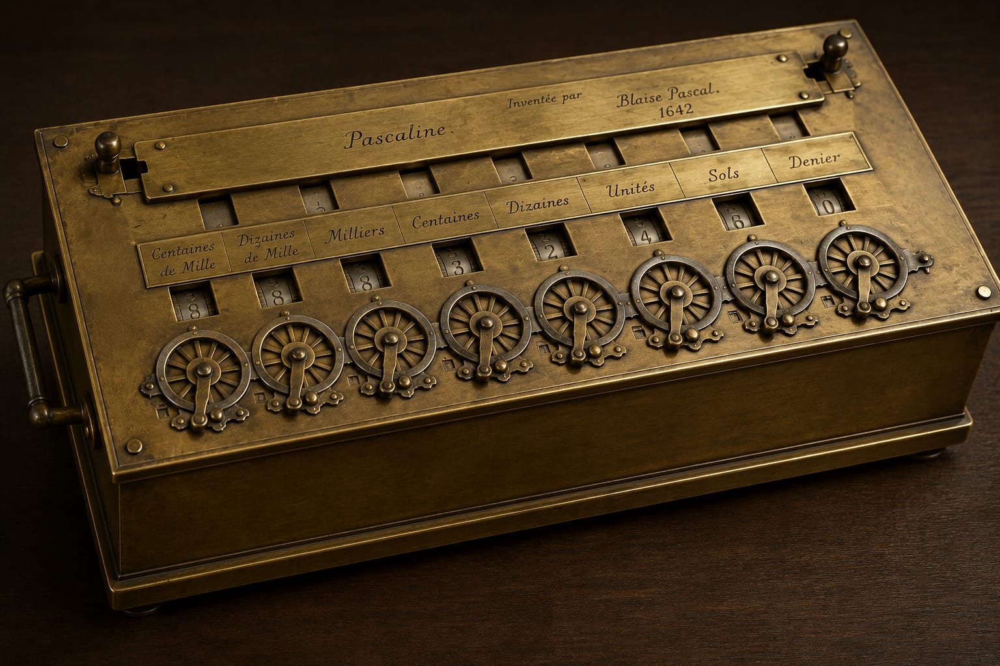
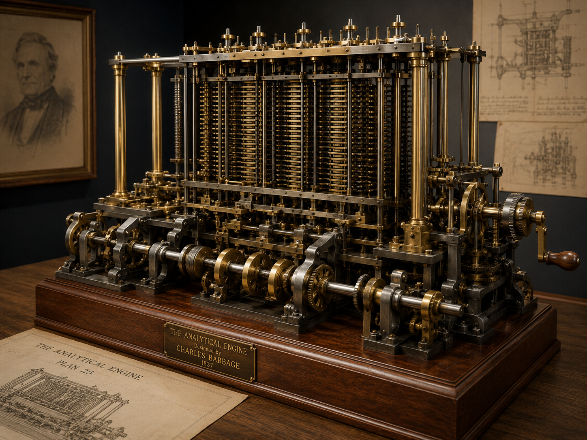
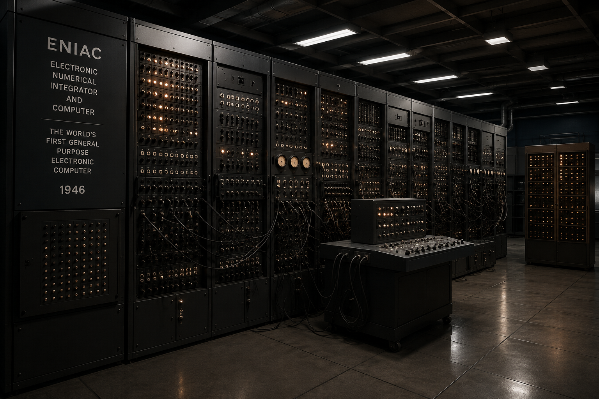
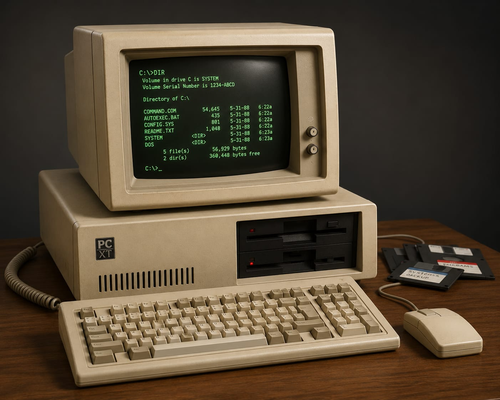
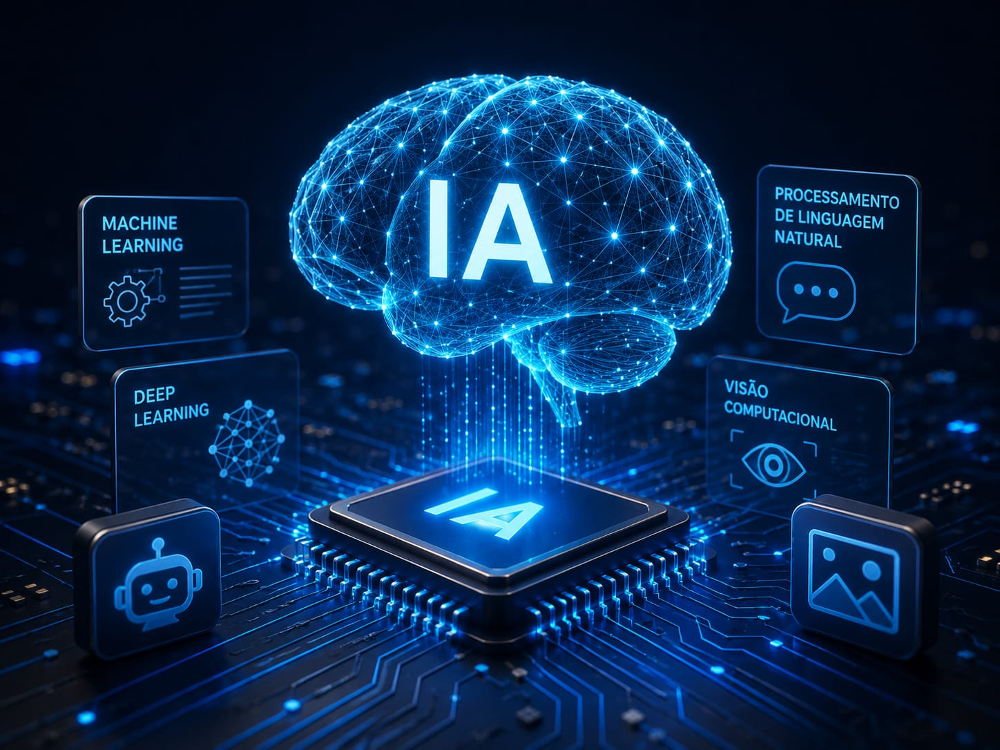
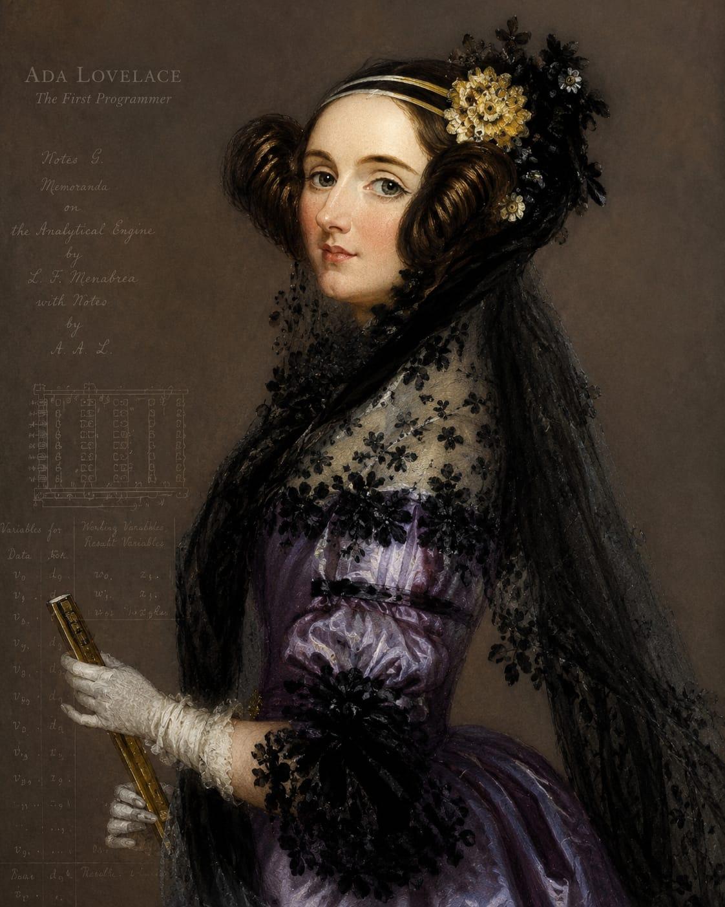
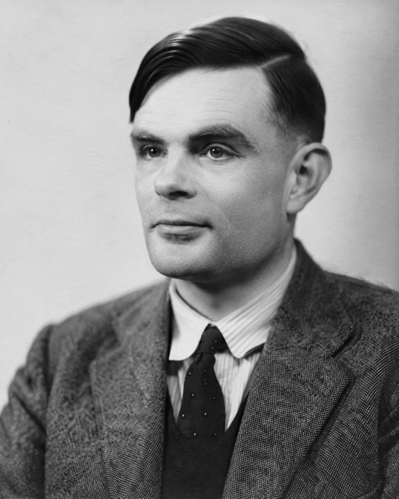

2500 a.C. - Ábaco
Primeiro instrumento utilizado para cálculos matemáticos.
Da criação do ábaco à Inteligência Artificial
A computação passou por milhares de anos de evolução até chegar aos computadores modernos que utilizamos atualmente.
Primeiro instrumento utilizado para cálculos matemáticos.

Calculadora mecânica criada por Blaise Pascal.

Projeto considerado precursor dos computadores modernos.

Um dos primeiros computadores eletrônicos de uso geral.

Surgimento dos computadores pessoais.

Computação em nuvem, IA e tecnologias inteligentes.

Considerada a primeira programadora da história.

Pai da computação moderna.

Pioneiro da computação e da inteligência artificial.
#include <stdio.h>
int main() {
printf("Olá, Mundo!");
return 0;
}
Clique no botão para descobrir uma curiosidade.
A história da computação demonstra como a tecnologia evoluiu desde simples ferramentas de cálculo até sistemas inteligentes capazes de transformar o mundo.